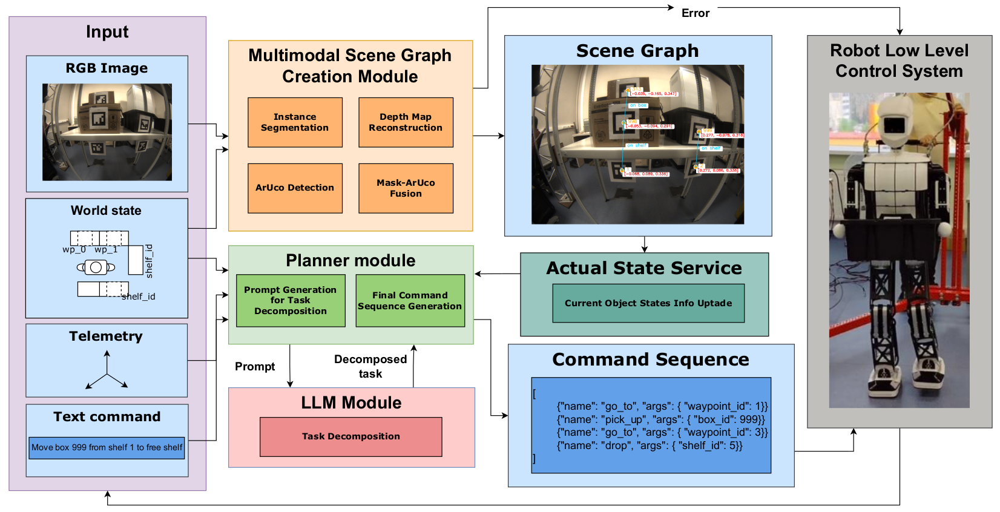

The project contains two main nodes: Planner and Perception Module. The purple block represents all data coming from outside the pipeline for further processing. The arrows show the interaction of different modules and the addition of negative feedback from the environment and the robot. The Scheduler generates control instructions for the robot based on the json file generated by the Perception module. Analysis by visual information works in service mode and transmits a message to the Planner Module on request when one of five check points is reached.
The Perception Module first processes the RBG frame, Actual State service updates environment information which used by Planner Module to decompose user text command.